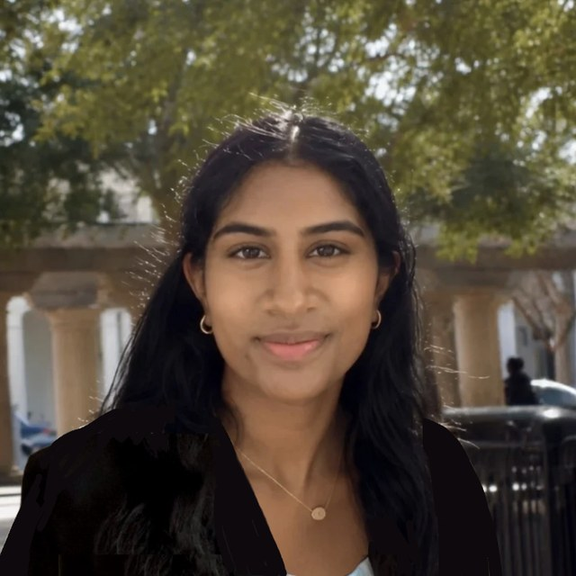
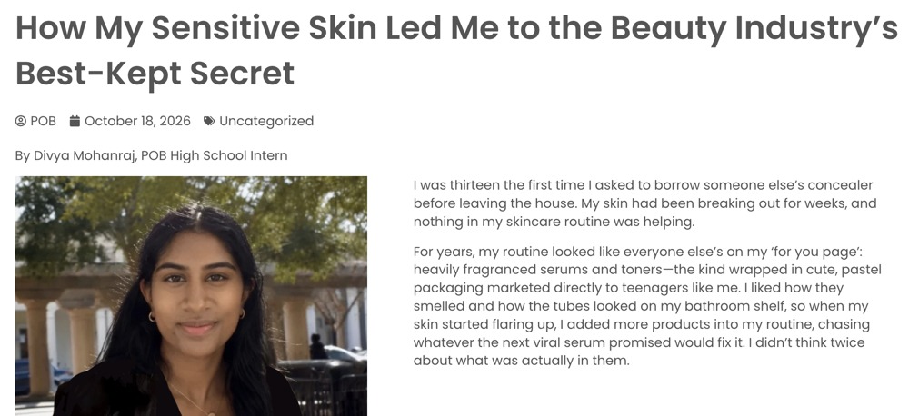

Texas Academy of Mathematics and Science
University of North Texas · Grades 11–12
Expected graduation May 2027

Aspiring chemical engineer
Hello, my name is Divya Mohanraj. I am a student at the Texas Academy of Mathematics and Science, and I plan to major in Chemical Engineering. Through my research at the University of North Texas, I have developed a passion for solvation thermodynamics. I am interested in cosmetic and pharmaceutical formulation, specifically the use of non-toxic solvents in purification and manufacturing processes. I also study toxic ingredients in consumer products and communicate that research to the general public.
In the future, I plan to pursue a career designing cosmetic and pharmaceutical products and manufacturing processes that use non-toxic solvents and ingredients, and to keep my research accessible to the public.

Aspiring Chemical
Engineer


University of North Texas · Grades 11–12
Expected graduation May 2027


Denton, Texas · 1 yr 6 mos
Aug 2025 – Present · 4 hrs/week, 40 weeks
May 2025 – Jul 2025
Competitively selected as 1 of 24 from over 200 for a $4,000 scholarship to conduct 40 hours per week of research in solvation chemistry under Dr. William Acree in the Department of Chemistry at UNT.
Solvation chemistry research · University of North Texas
Research journal · 10 mos
Oct 2026 – Present
Jan 2026 – Sep 2026
Breast Cancer Prevention Partners (BCPP) · Protect Our Breasts (POB) · Internship
Jul 2026 – Present · 4 hrs/week, 24 weeks
Check out my article!

Protect Our Breasts · Breast Cancer Prevention PartnersHow My Sensitive Skin Led Me to the Beauty Industry’s Best Kept SecretMy analysis of 5 popular cosmetic products and which ingredients to avoid.Open link ↗Institute for Youth in Policy · Fellowship
Jun 2026 – Aug 2026 · 3 hrs/week, 9 weeks
Books & Bridges · Nonprofit · Denton, Texas
May 2025 – Present · 2 hrs/week, 35 weeks/year
Music and Arts · Glennda’s Music Studio
Grades 9–12 · 2 hrs/week, 35 weeks
North Texas Food Bank · Volunteer
Grades 9–12 · 3 hrs/month, 12 weeks

2026
Awarded for a perfect 4.0 grade-point average while completing 12 or more credit hours.
2025
$4,000 stipend. Competitively selected as 1 of 24 from over 200 peers to conduct 40 hours per week of residential research.
2026
$4,000 stipend. Selected as 1 of 55 based on research outcomes and academic merit, to conduct 40 hours per week of residential research.
2025, 2026
$500 award for outstanding undergraduate research and the continuance of research during a student’s time at UNT.
2025, 2026
Selected both years as one of 10 students statewide to present advanced research. In 2026, awarded 4th place by university faculty for a 20-page paper and 12-minute oral defense applying Abraham model solute descriptors to predict solubility behaviors for green pharmaceutical replacements.
2026
Selected as 1 of 3 out of 65 fellows in the Summer 2026 cohort for showing meaningful work in green chemistry and policy and committing to solve real-world challenges. Featured on the official YIP Instagram.
2025
Competed nationally in the Social Media Marketing Campaign event with a campaign promoting healthy eating to ages 13–18 for a fictitious company.
2024
FTC Machine, Creativity, and Innovation (MCI) Inspire Awards, recognizing robot design (1st) and innovation (2nd).
2025
Placed 5th in the chemistry category, evaluated on thermodynamics, stoichiometry, and gas laws, qualifying for the state-level contest.

CITI Program · Issued Sep 2025 · Expires Sep 2029 · Record ID 72206152
Completed the TAMS/Honors Basic RCR course with a reported score of 100%, covering plagiarism, authorship, collaborative research, and research misconduct. Each of the four required modules was passed with 5/5.
Skills: Research Ethics, Scientific Integrity
I have thirteen papers on solvation thermodynamics, solvent selection, and corrections to published solubility data. Five as first author, and one as sole author. ResearchGate profile

Solvation thermodynamics studies how a compound dissolves in a liquid and how much energy that process involves. In Dr. Acree’s lab, I use the Abraham solvation parameter model, which gives each compound a set of numerical descriptors and uses them to predict how it dissolves in different solvents. These predictions reduce the number of solubility measurements a lab has to run.
Green solvents matter because solvents carry the ingredients in cosmetics, medicines, and manufacturing, and some common ones are toxic. A green solvent is a safer replacement that performs a similar job. My sole-author paper tests diethyl adipate as a replacement for toxic cosmetic ingredients, and my commentaries correct errors in published solubility data so that later work builds on accurate numbers.

UNT Wingspan Research Journal
July 2026
Mohanraj, D. (sole author)
Accepted for publication, forthcoming Spring 2027. Applied SPSS regression to experimental mole-fraction solubility results and toxicology literature, categorizing polar and non-polar solvation performance to confirm the functionality of diethyl adipate as a replacement for 10 toxic ingredients.

Physics and Chemistry of Liquids, 63(6), 851–873
July 2025
Lin, B., Turner, C., Kabin, A., Mohanraj, D., Kowtha, S., Sun, A., Acree, W. E.
Determined six-value Abraham model solute descriptors, which encode a molecule’s polarity, hydrogen bonding, and size, for 12 medicinal and agricultural compounds including letrozole and finerenone, revealing suppressed hydrogen-bond donor values that signal possible intramolecular hydrogen bonding and extending machine-learning training datasets.
Journal of Molecular Liquids, 436, 128194
July 2025
Turner, C., Mohanraj, D., Sun, A., Kabin, A., Kowtha, S., Lin, B., Acree, W. E.
Identified miscalculated apparent molal volumes for two cationic surfactants, CTAB and DTAB, by recalculating the values from the original authors’ densities and finding that the solvent’s density exceeded the mixture’s density, revealing an error in the published data.
Journal of Molecular Liquids, 437, 128518
September 2025
Mohanraj, D., Lin, B., Kabin, A., Turner, C., Sun, A., Kowtha, S., Acree, W. E.
Reanalyzed published mole-fraction solubility data for 1-naphthylamine across twelve solvents using IBM SPSS, identifying a temperature unit-scaling error and deriving corrected van’t Hoff coefficients, confirmed as mathematically consistent through slope-intercept correlation.
Physics and Chemistry of Liquids, 64(1), 171–185
October 2025
Mohanraj, D., Jamdagneya, A., Varadharajan, A., Acree, W. E.
Discovered errors in van’t Hoff and modified Apelblat equation coefficients that forced calculated Gibbs energy values to zero, then used Excel Solver to curve fit 36 systems and confirmed that two independent fitting methods produced identical results.
Physics and Chemistry of Liquids (in press)
December 2025
Lin, B., Turner, C., Kabin, A., Mohanraj, D., Kowtha, S., Sun, A., Acree, W. E.
Expanded Abraham model correlations for predicting how compounds transfer into 1,4-dioxane and methyl acetate by adding experimental mole-fraction solubility data, improving coverage of solutes whose hydrogen-bond acceptor descriptor values exceed unity.
Journal of Solution Chemistry, 55, 935–939
January 2026
Mohanraj, D., Damera, N., Acree, W. E.
Recalculated solid–liquid equilibrium data for 2,4,6-trinitro-3-bromoanisole across water and eleven solvents, correcting a mixed-solvent model that had been misapplied to single-solvent data.
Physics and Chemistry of Liquids, 64(3), 555–571
March 2026
Kabin, A., Mohanraj, D., Lin, B., Kowtha, S., Sun, A., Turner, C., Acree, W. E.
Applied experimentally measured mole-fraction solubility data for 34 crystalline organic solutes in diethyl adipate to derive predictive water-to-solvent and gas-to-solvent correlations that back-calculated the data to within 0.13 log units.
Physics and Chemistry of Liquids, 64(4), 738–752
May 2026
Mohanraj, D., Lin, B., Kabin, A., Kowtha, S., Sun, A., Jamdagneya, A., … Acree, W. E.
Measured mole-fraction solubilities of dehydroacetic acid in 15 pure solvents using Beer–Lambert calibration curves, then used Excel Solver to calculate all six Abraham model solute descriptors, confirming that its hydroxyl proton is engaged entirely in intramolecular hydrogen bonding.
Journal of Chemical Thermodynamics (in press)
June 2026
Mohanraj, D., Varadharajan, A., Julson, B., Lei, A., Acree, W. E.
Identified miscalculated van’t Hoff coefficients for cymoxanil across 13 solvent systems, tracing the error to the original authors regressing a 100-fold scaled value instead of the true mole fraction, then re-modeled the data to derive corrected coefficients and dissolution enthalpies.
Physics and Chemistry of Liquids (in press)
July 2026
Varadharajan, A., Mohanraj, D., Lei, A., Acree, W. E.
Determined updated Abraham model solute descriptors for diuron and monuron using newly measured solubilities in 16 organic solvents, reducing deviations between measured and back-calculated values to within 0.17 log units.
Physics and Chemistry of Liquids (in press)
August 2026
Wilson, C., Mohanraj, D., Varadharajan, A., Lei, A., Acree, W. E.
Expanded Abraham model correlations for propyl acetate and isopropyl acetate using newly compiled solubility data, growing the datasets by up to 92 percent and improving predictive accuracy to within 0.1 log units.
Physics and Chemistry of Liquids (in press)
September 2026
Gallimore, A., Damera, N., Jamdagneya, A., Lei, A., Mohanraj, D., Varadharajan, A., Kabin, A., Kowtha, S., Sun, A., Acree, W. E.
Derived new Abraham model correlations for hexyl acetate from newly measured solubilities of 36 crystalline organic compounds, back-calculating the data to within 0.13 log units.
Feel free to connect or reach out.